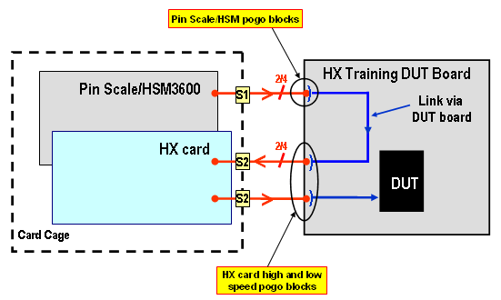
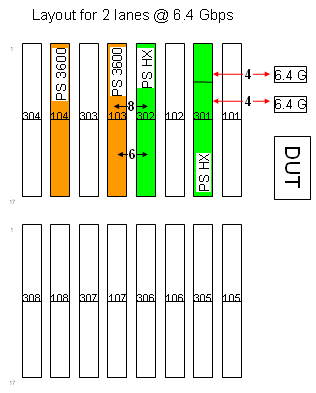
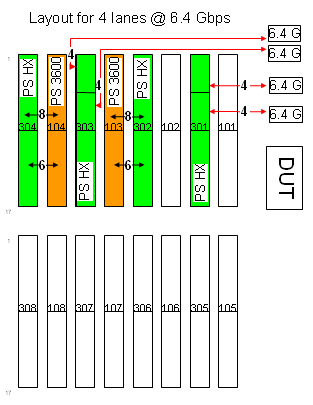
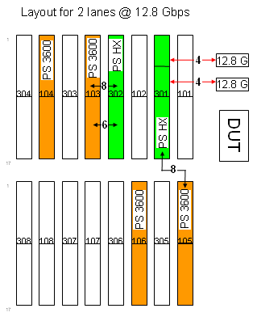
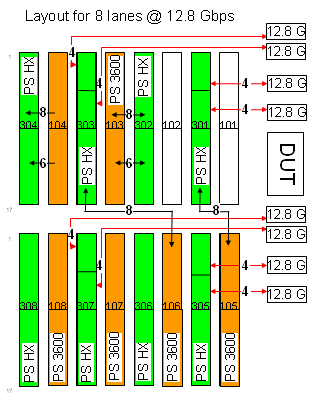
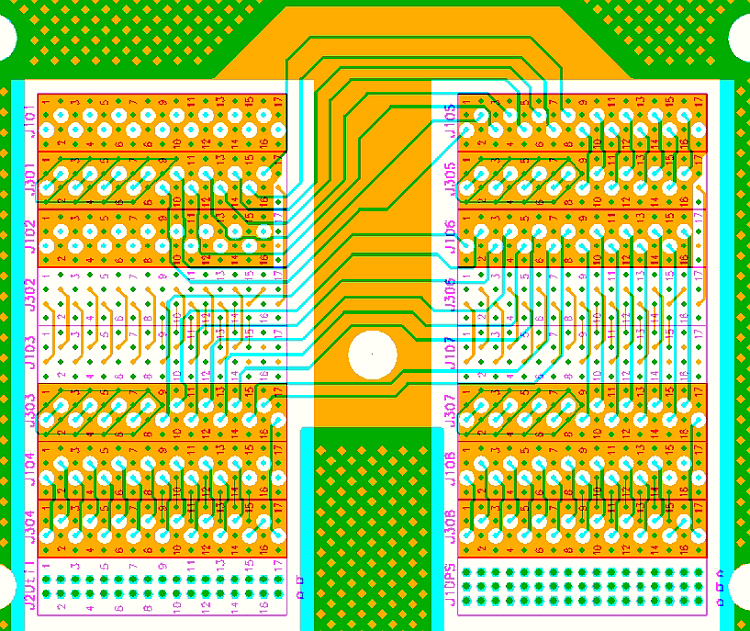

Pin Scale HX card requirements for pattern mode
The connections between the Pin Scale 3600 digital card and the Pin Scale HX card must be routed via the DUT board. This imposes specific routing rules on a DUT board.
One Pin Scale HX card occupies one slot in the test head and it interfaces with two S2 pogo blocks which route the high-speed signals to the DUT and low speed signals from the Pin Scale cards.
Pin Scale cards normally interface with S1 pogo blocks and Pin Scale HX card with S2 pogo blocks.

The DUT board must provide the required Pin Scale 3600 - Pin Scale HX card connections to support typical Pin Scale HX card applications in loopback, multiplex 2, and multiplex 4 mode.
Card Allocation for Standard Routing
The standard routing defines which Pin Scale 3600 pins are used to feed the Pin Scale HX card lanes. To use non-standard routing, you must override the standard routing information by defining the non-standard routing in the model file.
The standard configuration ensures that you can calibrate any possible number of Pin Scale HX cards in a card cage (multiplex 2 or multiplex 4 mode) with a single calibration board. The figures below show some standard test head configuration examples with varying numbers of lanes.




The graphic below shows the layout for one card cage for the Pin Scale HX card calibration/diagnostic board. The example shows a multiplex 4 routing for four Pin Scale HX cards in a card cage.

In above layout example the Pin Scale HX card driver is routed to the receiver in each lane, the jitter modulation part is routed to the jitter modulation output and the same with the tracking input and output.
Functional changes
- Introduced before SmarTest 6.3.2